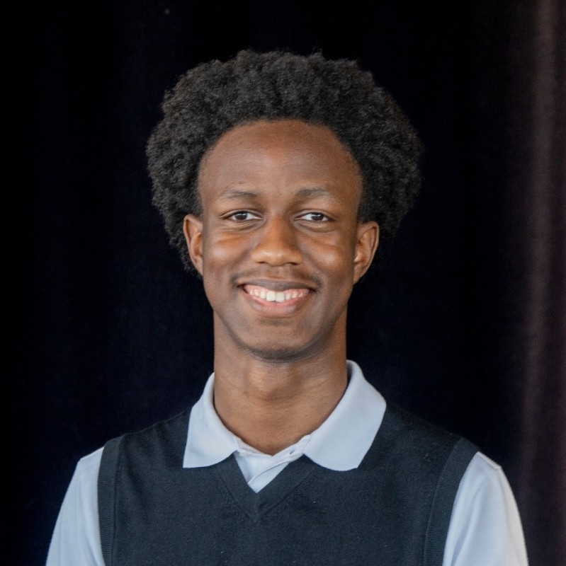
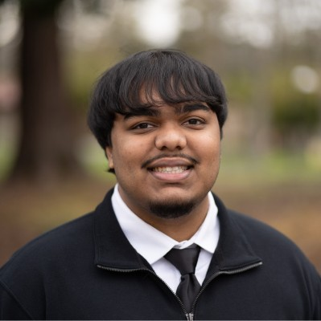
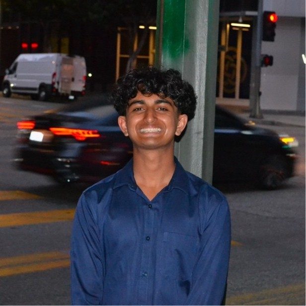

De Anza College • AI Alignment
A student organization dedicated to the rigorous study of AI safety, alignment theory, and the governance of transformative technologies.
De Anza AI Alignment is a student organization dedicated to the serious study of AI safety, alignment theory, and the governance of transformative technologies. We were founded on the premise that community college students are not peripheral to this conversation, but rather essential to it. Diversity of background and perspective is not a courtesy extended to alignment research; it is a prerequisite for getting it right.
Our work spans the full intellectual landscape of the alignment problem. We engage with the technical foundations like reward modeling, interpretability, scalable oversight, robustness, alongside the philosophical and institutional questions that technical solutions alone cannot answer: How do we specify what we want when we do not fully know? How do institutions remain accountable as the systems they deploy grow more capable? What does it mean for an AI system to be honest, and to whom?
Reading Groups
Canonical and frontier literature, from Bostrom and Russell to the latest work from leading alignment labs.
Speaker Series
Researchers and practitioners working on alignment, governance, and interpretability professionally.
Technical Workshops
Problem-solving sessions bridging theory and implementation across every level of technical depth.
Policy & Governance
Because no amount of technical ingenuity removes the need for human institutions to make wise choices.
What distinguishes us is our intellectual culture. We do not treat alignment as a settled field with a fixed canon of answers. We treat it as an open and difficult research program, one that rewards epistemic humility, precise reasoning, and genuine curiosity. Members are expected to update their views, to sit with uncertainty, and to challenge each other charitably but rigorously.
We believe that the quality of thinking developed here at this stage, at this level of education, has compounding value. The students who sharpen their reasoning in this room will carry those habits into graduate programs, labs, and policy offices that will shape how this technology unfolds. We welcome students from every background and discipline. If you are drawn to hard problems with high stakes and believe that rigorous thinking is among the most useful things a person can offer the future, you belong here.

headshot1.pngBruce brings cross-disciplinary experience across large-language-model research, applied machine learning, and systems engineering. Bruce currently works as an LLM Researcher at Algoverse AI, conducting experimental research on deception in model reasoning using linear probes, sparse autoencoders, and activation patching, and contributing to work targeting top AI conferences. Previously, Bruce was selected as a TechWise x Google Fellow, developing strong foundations in Python, machine learning, and data structures through a highly selective national program. Bruce studies Computer Science at De Anza College, leading the Competitive Programming Club and Quantum Physics Club, grounding his work in rigorous algorithmic, statistical, and experimental analysis.

headshot2.pngArya Somu brings cross-disciplinary experience across investment banking and quantitative research. He is an incoming Research Intern at the Stanford AFT Lab, previously served as an Investment Banking Analyst at KCC Capital Partners focusing on the AI for Pharmaceutical Discovery sector, conducted quantitative MBS research with a focus on convexity hedging at Esplanade Capital, and was selected to participate in SIG Discovery Day. Arya studies Mathematics and Finance at De Anza College, where he founded and leads Polaris Research Group and serves in senior leadership roles across finance and strategy organizations, grounding his work in rigorous quantitative modeling, valuation, and fundamental analysis.

headshot3.png[Shakil's bio goes here. Include his academic background, research interests within AI alignment and safety, prior experience, and what drew him to co-founding DAIA. 3--4 sentences recommended.]